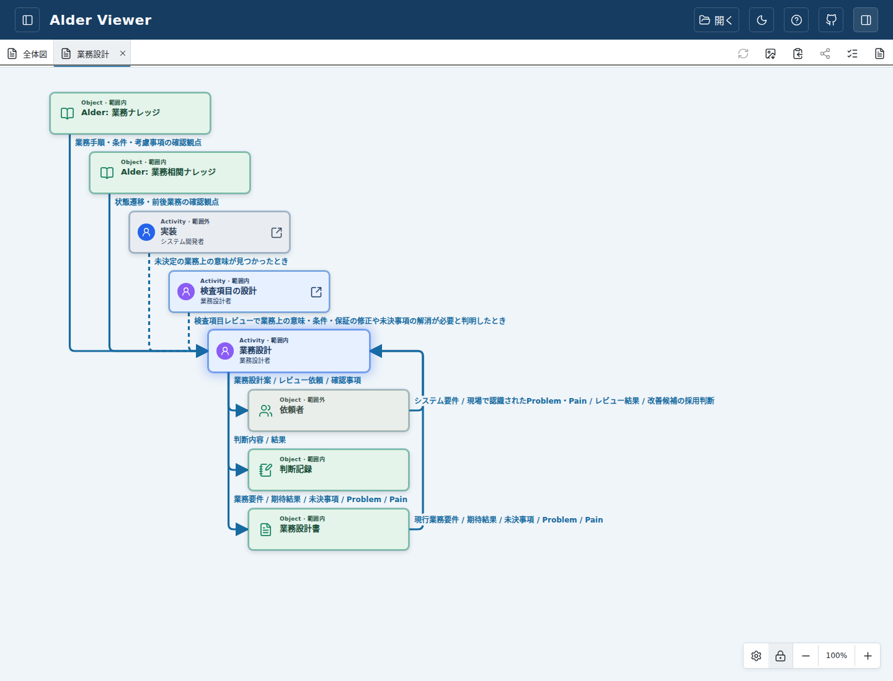
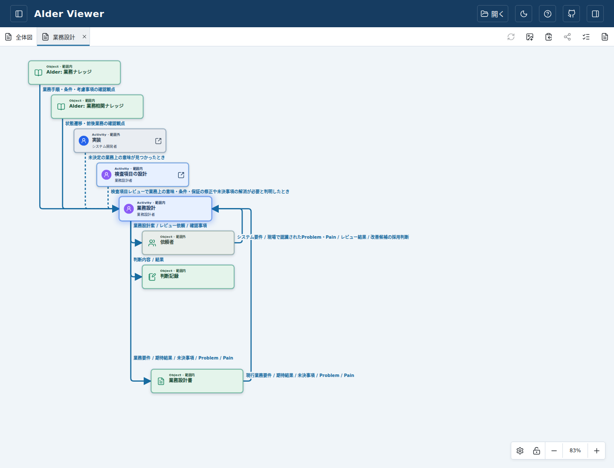
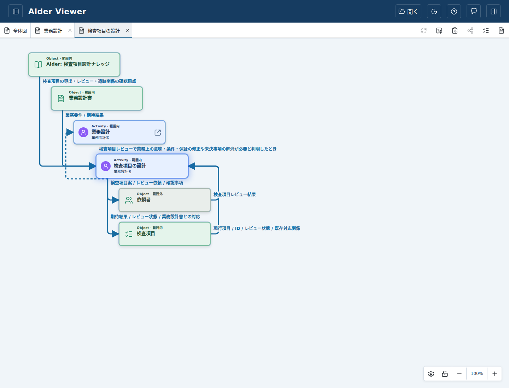
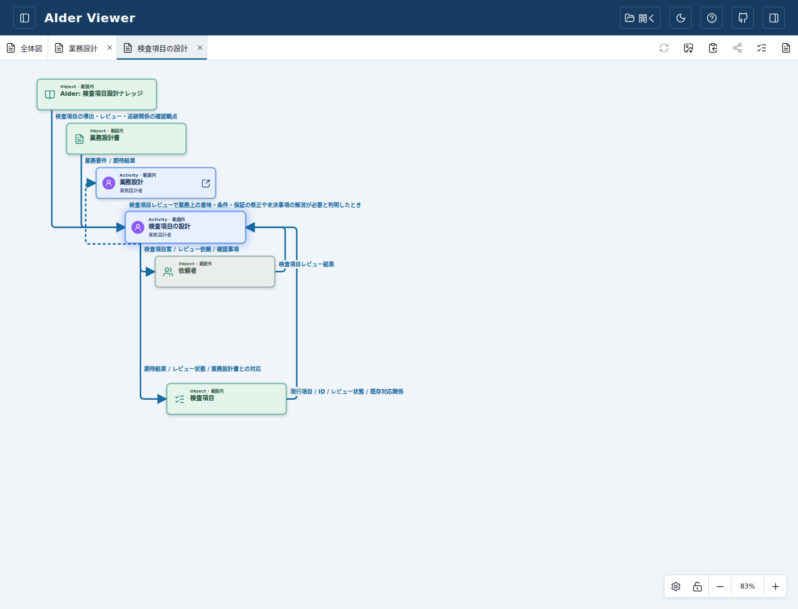
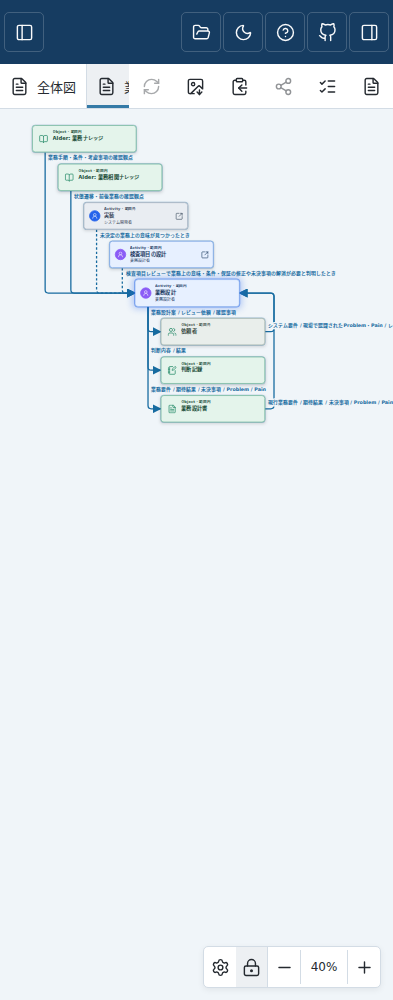
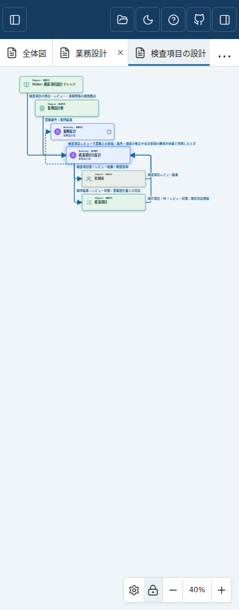

この版で標準サンプルを開く · Draft PR #245 · 検証状況
確認版 0c306544f5d03c650069bb80b16187b8e3fc7b32。業務設計・検査項目の設計の詳細を開いてください。上流の階段は横のずらし幅を半分へ縮めました。右側の戻り線はシェイプから一定距離で曲がり、同じ列では縦区間が重なります。障害物があれば迂回します。
説明は左揃えとし、Outputはシェイプ直上で線の横から書き始め、戻りInputは右側の始端直後へ置きます。ドラッグ後も追従します。以前保存した座標は変えません。新しい初期配置は「表示設定 → レイアウトを初期値に戻す」で試せます。
本人GUI再レビュー前につき未採用。merge/releaseは行いません。





